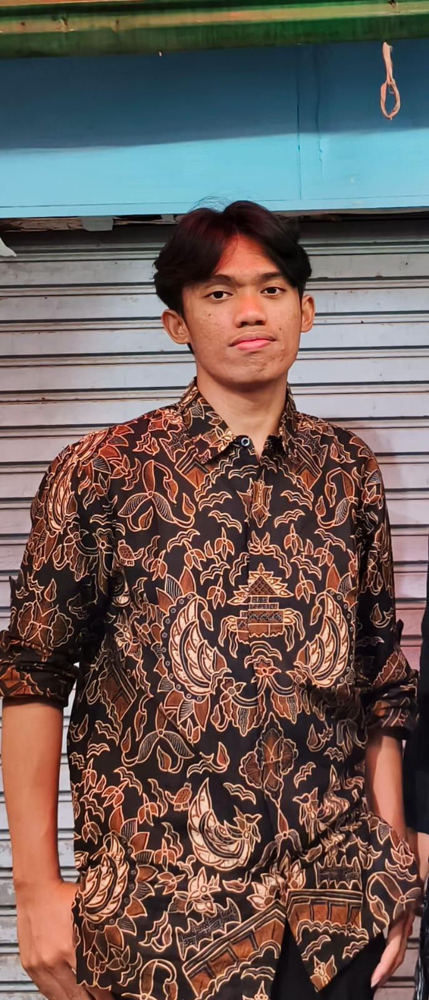

Saya Ilham Rasya Akbar, mahasiswa semester 3 Universitas Sebelas Maret program studi Pendidikan Teknik Informatika dan Komputer angkatan 2025. Saya lahir di Surakarta pada tanggal 16 oktober 2006. Saya tinggal di Serengan, Surakarta. Aku ada beberapa hobi antara lain membaca novel, menonton film, dan tentunya olahraga seperti bulu tangkis, jogging, voli, berenang dan masih banyak lagi. Selain hobi saya juga punya tujuan di kuliah ini. Di awal semester saya ingin menambah relasi saya dan di pertengahan semester saya ingin mengejar prestasi saya dengan mengikuti berbagai lomba dan mencari berbagai sertifikat.
Di prodiku ini saya berminat untuk memperdalam keahlian ku di jaringan maupun pemograman. Tapi saya lebih suka di bidang jaringan. Ini juga menjadi salah satu alasan saya mendaftar di Pendidikan teknik informatika dan Komputer ini. Selain itu saya memang dari SMK 2 Surakarta jurusan Teknik Jaringan Komputer dan Telekomunikasi atau yang bisa disebut TJKT.